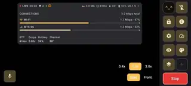

Brix
صوت وفيديو وموسيقى
A free app for streaming from your phone while you move around. It publishes to Twitch and to any server that speaks RTMP, SRT or WHIP. And when one network isn't enough, it can bond several links into a single stream, so the broadcast survives the walk from Wi-Fi to cellular instead of falling apar
✓ ترخيص مفتوح (GPL-3.0-only) · آخر تحديث: 2026-10-29
0.2.1-betaالإصدار
6.6 MBالحجم
GPL-3.0-onlyالرخصة
Open in Kanzتحميل APK (6.6 MB)
Download APK
SHA-256: 313696152d957a69145681091686e65ad3572e7494b4c69edb53d16d68a4c394

امسح الكود لفتح صفحة التطبيق
Scan to open this app page
لو كنز مش متثبت عندك: نزّل متجر كنز.
Not installed? Get the Kanz store.